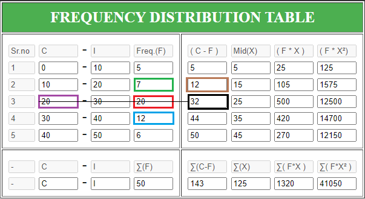

STATISTICAL TABLE CALCULATOR >
INFORMATION

ENTER VALUES FOR MODE
> To determine dc,du,dd,l1
Step 1:- Find biggest frequency, that frequency is "dc"
Step 2:- The frequency above dc is "du (d up)"
Step 3:- The frequency below dc is "dd (d down)"
Step 4:- The corresponding c-i value of dc is "l1"
ENTER VALUES FOR MEDIAN
Step 1:- To determine F and f
Step 2:- If value of n/2 is x find the value of c-f just bigger than x
Step 3:- The value above the gotten value is "F"
Step 4:- The corresponding frequency is "f"